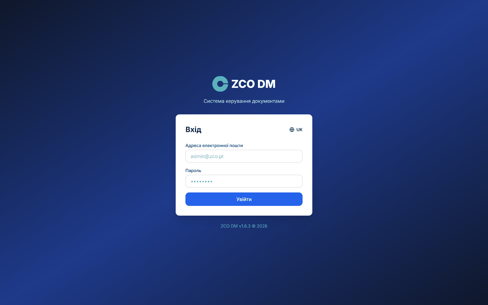
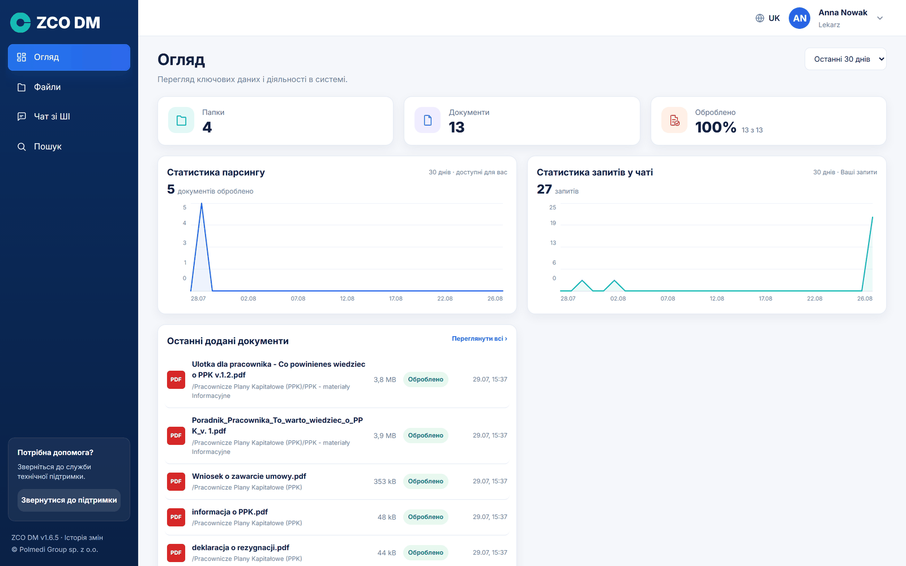
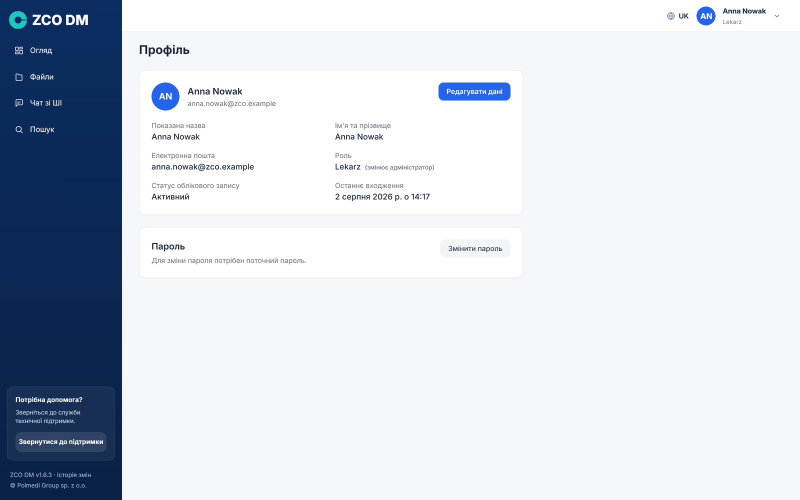
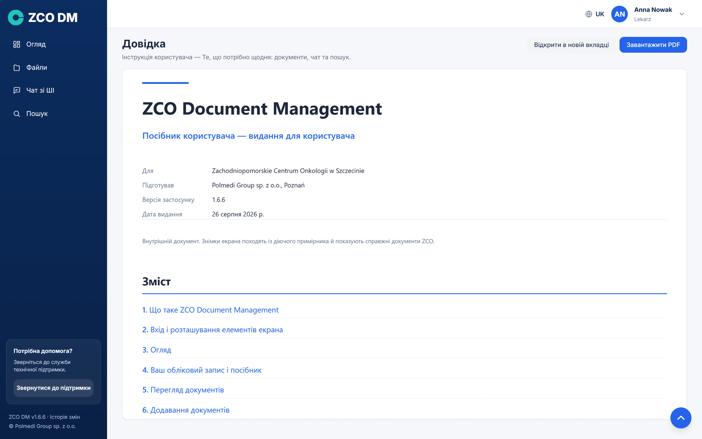
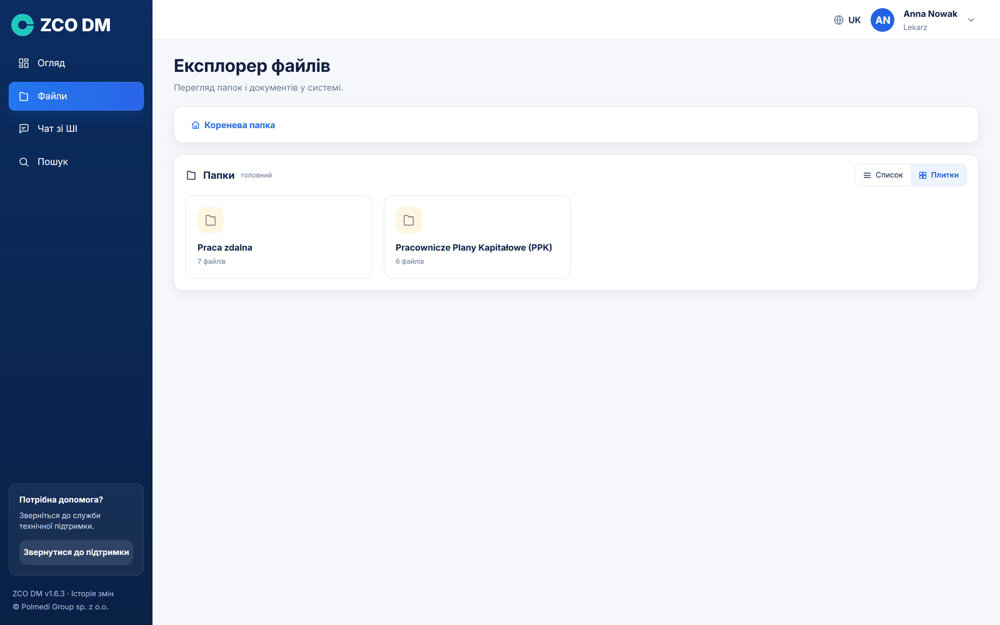
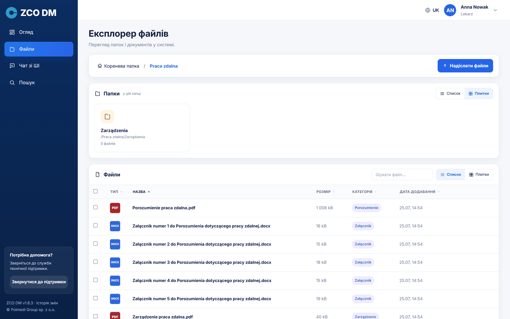
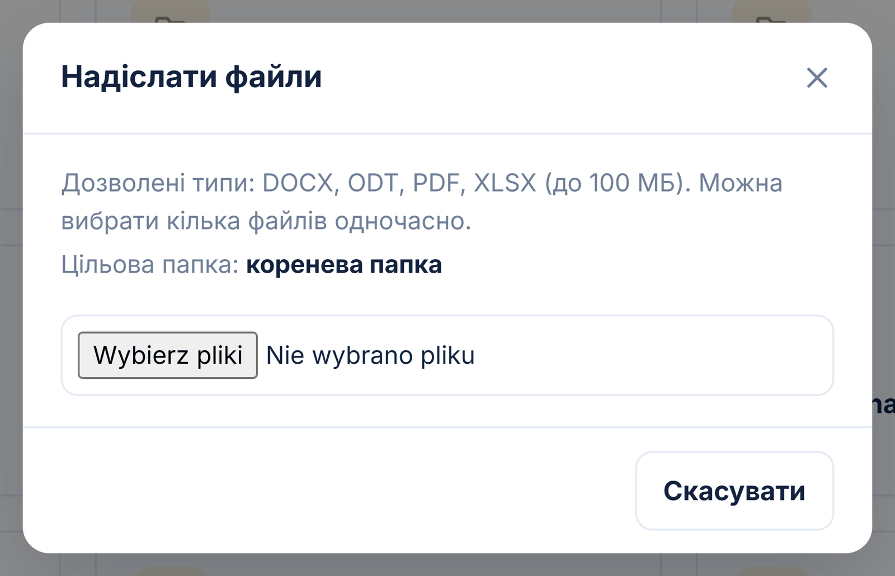
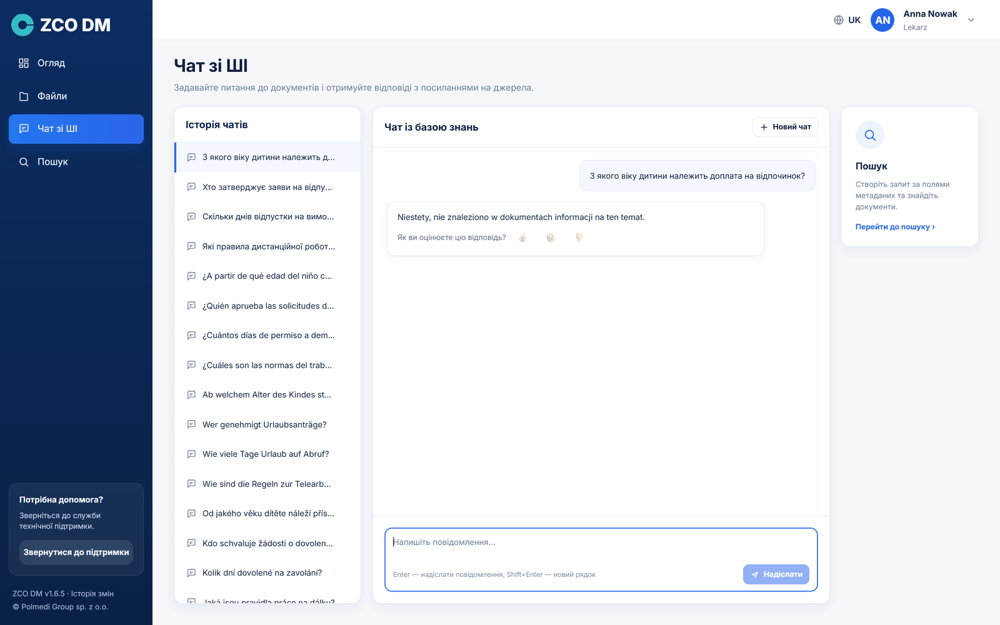
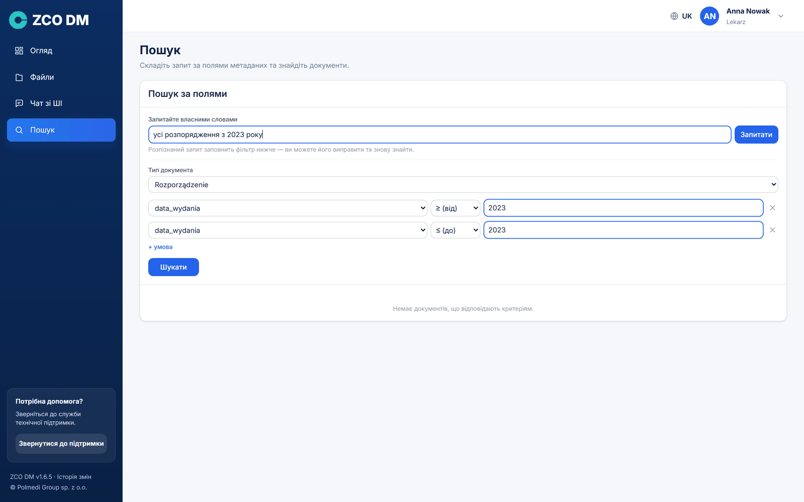
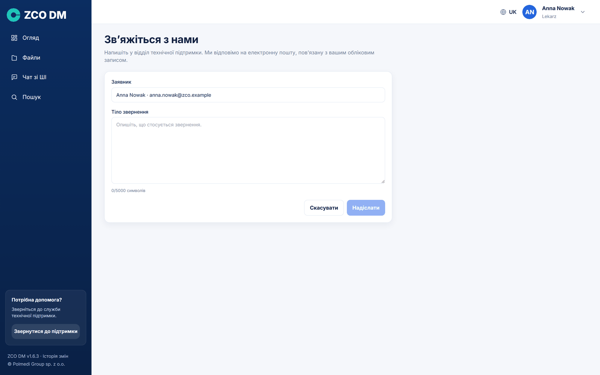

ZCO Document Management (скорочено ZCO DM) — це внутрішня база документів. Застосунок робить дві речі водночас: зберігає документи у впорядкованій структурі папок і дозволяє ставити запитання про їхній зміст звичайною мовою, так само, як ми запитали б колегу, який ці документи знає.
Різниця порівняно зі звичайним мережевим диском є засадничою. На диску треба знати, у якому файлі шукати. Тут достатньо запитати «які правила дистанційної роботи?», і застосунок сам знайде потрібні фрагменти документів, складе з них відповідь і покаже, з яких документів походить кожне речення.
Застосунок відповідає на два різні види запитань і має для них два окремі екрани. Чат зі ШІ відповідає на запитання про зміст — «з якого віку дитини належить доплата?». Пошук відповідає на запитання про структуру — «покажи всі розпорядження з 2023 року». Поділ є навмисним: завдяки ньому не треба вгадувати, у яке поле вписати запитання.
Кожен документ проходить автоматичну обробку. Застосунок зчитує його зміст (також із таблиць), ділить на фрагменти, розпізнає вид документа — розпорядження, процедуру, заяву — і витягає з нього описові поля, наприклад номер, дату чи особу, яка затвердила. Тільки після цього документ стає видимим для пошуку та для чату.
Обробка одного документа триває зазвичай від кількох десятків секунд до кількох хвилин — залежно від його обсягу та від того, чи це текстовий файл, чи скан, який потребує розпізнавання тексту. Увесь цей час документ має стан У черзі або Обробка.
Увесь застосунок разом із мовною моделлю працює на сервері, що належить Zachodniopomorskie Centrum Onkologii. Ані зміст документів, ані поставлені запитання цього сервера не залишають і не надсилаються до жодної зовнішньої служби. Доступ до документів випливає з прав, наданих ролі, до якої належить обліковий запис — користувач бачить лише ті папки, які йому відкрито.
Застосунок відкриваємо у браузері за адресою, яку подав адміністратор. Над формою розміщено знак примірника — піктограму й назву. Входимо за адресою електронної пошти та паролем, отриманим від адміністратора; регістр літер в адресі не має значення.

Після входу екран ділиться на дві частини. Ліворуч розміщено темно-синє меню, праворуч — зміст обраної сторінки. У правому верхньому куті видно ім'я та прізвище, а також кружечок з ініціалами, який розгортає меню користувача. Унизу бічного меню стоїть номер версії застосунку — він є посиланням на історію змін — та відомості про виробника.
Клацання на знаку примірника вгорі меню згортає його до самих піктограм, залишаючи більше місця для змісту. Повторне клацання розгортає меню назад. Вибір запам'ятовується між сеансами, тож раз згорнуте меню лишиться згорнутим і після наступного входу.
Якщо хтось інший бачить у меню додаткову частину під лінією АДМІНІСТРУВАННЯ, це означає, що він має обліковий запис адміністратора. Звичайний обліковий запис цієї частини застосунку не бачить і доступу до неї не має.
Унизу меню є ще плитка Потрібна допомога? з кнопкою Зв'яжіться з нами — вона веде до форми звернення до технічної підтримки (див. окремий розділ). Коли меню не вміщається на низькому екрані, прокручується сам перелік пунктів; плитка допомоги та підвал лишаються на своєму місці.
Огляд — це початковий екран. Він показує стан бази документів у числах і графіках, і все на ньому стосується обраного проміжку часу — випадного списку в правому верхньому куті з варіантами 7, 30 і 90 днів. Один вибір діє на весь екран, тож плитки й графіки завжди говорять про той самий період.

Чотири плитки подають кількість облікових записів, папок і документів та частку оброблених документів. Під числом буває другий рядок із порівнянням до попереднього періоду, наприклад ↑ 12,6 % щодо попередніх 30 днів.
Два графіки показують денну активність: кількість оброблених документів і кількість запитань, поставлених чату. Наведення курсора показує точне значення за конкретний день.
Числа в Огляді стосуються того, що нам вільно бачити. Документи й папки рахуються в межах наданих прав, а графік запитань показує виключно запитання, поставлені з власного облікового запису. Дві особи з різними правами побачать тому на цьому екрані різні числа, і це правильна поведінка.
↑ ЗмістКружечок з ініціалами в правому верхньому куті розгортає меню з трьома пунктами: Профіль, Посібник користувача та Вийти. Меню закривається клавішею Escape або клацанням поруч.
Сторінка Профіль показує дані облікового запису: показану назву, ім'я та прізвище, адресу електронної пошти, призначену роль, стан облікового запису та дату останнього входу.

Кнопка Редагувати дані перетворює три перші пункти на поля форми. Зберігаємо кнопкою Зберегти, відступаємо кнопкою Скасувати.
Пароль змінюємо на окремій картці Пароль кнопкою Змінити пароль. Форма просить пароль, що використовується зараз, та дворазове введення нового. Новий пароль мусить мати щонайменше вісім символів і відрізнятися від попереднього.
Після вдалої зміни застосунок виходить із системи й показує екран входу — це навмисно: одразу перевіряємо, що новий пароль працює.
Пункт Посібник користувача відкриває сторінку Довідка з цим документом просто в застосунку, без пошуку файлу на диску. Угорі сторінки є дві кнопки: Відкрити в новій вкладці та Завантажити PDF. Адміністратор бачить повне видання, решта облікових записів — видання для користувача, що описує лише екрани, до яких вони мають доступ.

Екран Файли — це провідник документів. Угорі проходить шлях навігації, що починається з Кореневої папки — клацання будь-якого його елемента повертає на цей рівень. Нижче є дві картки: Папки і Файли.

Як папки, так і файли можна переглядати у вигляді списку або плиток — перемикач розміщено в заголовку кожної з карток, а вибір є незалежним для папок і для файлів. Список вміщає більше відомостей за одним поглядом, плитки зручніші, коли шукаємо документ «за зоровою пам'яттю».

Перелік файлів показує тип файлу, назву, розмір, категорію, розпізнану застосунком, і дату додавання. Категорія — це вид документа: розпорядження, процедура, заява — і саме вона найчастіше допомагає знайти потрібний файл. Документи, яких застосунок не зарахував до жодної категорії, мають у цьому стовпці напис невизначена.
Поле Шукати файл над переліком фільтрує документи за назвою в межах поточної папки. Під переліком стоїть кількість документів і вибір, скільки позицій показувати на сторінці (10, 25, 50 або 100).
Клацання рядка відкриває вікно з подробицями: тип файлу, розмір, стан обробки, дату додавання, папку, обліковий запис, який завантажив документ, і розпізнану категорію. З цього вікна документ можна завантажити, а файли PDF також переглянути в новій вкладці.
У кореневій папці звичайний обліковий запис не бачить жодних файлів — документи, що лежать поза папками, доступні виключно адміністраторові. Видимі натомість папки, які відкрито нашій ролі.
↑ ЗмістДокументи додаємо кнопкою Надіслати файли в правому верхньому куті сторінки Файли. Вони потрапляють до папки, яка відкрита в цю мить — тому спершу заходимо до потрібної папки і лише потім завантажуємо. Цільову папку завжди виписано у вікні надсилання.

Можна позначити кілька файлів водночас. Застосунок показує тоді поступ окремо для кожного з них, а наприкінці підсумок: скільки файлів завантажено і скільки завершилося помилкою.
Застосунок приймає файли PDF, DOCX, ODT і XLSX, кожен розміром до 100 МБ. Перелік форматів видно у вікні надсилання і походить просто з налаштувань застосунку — якщо адміністратор його змінить, вікно покаже новий перелік, а системне вікно вибору файлу відфільтрує решту розширень.
Кнопка Надіслати файли з'являється лише в папках, до яких ми маємо право запису. У папках, відкритих лише для читання, ми бачимо документи й можемо їх завантажувати, але не можемо нічого додати ані видалити.
↑ ЗмістЕкран Чат зі ШІ — це місце, де ставимо запитання про зміст документів. Він ділиться на три частини: перелік попередніх розмов ліворуч, вікно розмови посередині та посилання на пошук праворуч.
Запитання вписуємо в поле внизу й підтверджуємо клавішею Enter; Shift+Enter переходить на новий рядок. Відповідь з'являється поступово, слово за словом — її можна перервати кнопкою Зупинити.

Під кожною відповіддю стоїть перелік документів, використаних у відповіді. Кожна позиція подає номер посилання, назву файлу, сторінку та вид документа; клацання відкриває документ-джерело. Номери в позначках відповідають посиланням у тексті відповіді, тож видно, яке речення звідки походить.
Нижче буває ще відомість на кшталт Також перевірено 7 документів, які не були використані разом із кнопкою, що розгортає їхній перелік. Це документи, які застосунок переглянув, шукаючи відповідь, але нічого на тему в них не знайшов — варто туди зазирнути, коли відповідь видається неповною.
Застосунок відповідає виключно на підставі завантажених документів. Якщо він не знайде відомостей, напише про це прямо, замість вигадувати. Відповідь «у документах не знайдено відомостей на цю тему» є тому відомістю про збірку документів, а не несправністю.
Запитання на кшталт «покажи всі розпорядження з 2023 року» застосунок розпізнає як прохання про перелік, а не про відповідь зі змісту. Він відповідає тоді реченням «Знайшов N документів», переліком цих документів і кнопкою Завантажити цей список у файлі XLSX.
Кожна розмова зберігається в переліку ліворуч, і до неї можна повернутися. Кнопка Новий чат починає розмову начисто. Це має значення: у межах однієї розмови застосунок бере до уваги попередні запитання, тож при зміні теми краще почати нову.
Пошук — це окремий екран у меню. Він відповідає на запитання про структуру збірки: «усі розпорядження з 2023 року», «заяви, підписані конкретною особою». Чат відповідає на запитання про зміст — ці два шляхи навмисно не змішано.
Найпростіше вписати запитання звичайною мовою в поле вгорі. Курсор стоїть у ньому одразу після входу на екран. Застосунок розпізнає із запитання вид документа та умови, заповнює ними форму нижче й одразу показує результати. Розпізнаний фільтр можна потім виправити вручну й шукати повторно.

Форма складається з виду документа та довільної кількості умов. Умова — це описове поле, оператор (містить, дорівнює, від, до, після, перед) і значення. Перелік доступних полів залежить від обраного виду документа — він походить просто зі схем документів.
Результати виглядають так само, як перелік документів під відповіддю чату: номер, назва файлу та вид документа. Сторінки тут немає — результатом є цілий файл, а не його фрагмент. Клацання відкриває документ. Над переліком є кнопка Завантажити цей список у файлі XLSX — аркуш містить повний набір описових полів, зі стовпцями в порядку, встановленому у схемі документа.
Плитка Потрібна допомога? внизу бічного меню веде до форми звернення до технічної підтримки. Досить описати справу й надіслати — відправника та примірник додано автоматично, а відповідь потрапить на адресу електронної пошти, призначену обліковому запису.

Звернення йде поштою, а не через механізм обробки документів. Це навмисно: збій обробки не може відрізати шляху повідомлення про проблему, бо саме тоді повідомлення потрібні найбільше.
Нижче найчастіші ситуації, про які повідомляють при першому контакті із застосунком.
| Ситуація | Що зробити |
|---|---|
| Я завантажив документ, але чат його не знає. | Перевірити стан у переліку файлів. Доки не буде Оброблено, документ у пошуку не бере участі. Для довгих документів обробка триває кілька хвилин. |
| Чат відповідає, що не знайшов відомостей. | Найчастіше запитання стосується документа, якого немає в базі, або документ ще не оброблено. Варто також поставити запитання інакше — повним реченням. |
| Я не бачу папки, про яку каже колега. | Папки відкриваються ролям. Якщо доступу бракує, слід попросити адміністратора надати право до цієї папки. |
| Застосунок вивів мене із системи сам. | Після періоду бездіяльності, встановленого адміністратором, сеанс спливає. Досить увійти ще раз. |
| Не можу завантажити файл — вікно вибору його не показує. | Застосунок приймає формати PDF, DOCX, ODT і XLSX. Файли в інших форматах треба спершу зберегти в одному з них. |
| Не можу увійти за іменем користувача. | Для входу служить виключно адреса електронної пошти, призначена обліковому запису. Ім'я користувача є лише показаною назвою. |
| Я забув пароль. | Новий пароль встановлює адміністратор у модулі Користувачі. Після входу варто змінити його на власний на сторінці Профіль. |
| Де я знайду цей посібник у застосунку? | Під кружечком з ініціалами в правому верхньому куті, пункт Довідка. Звідти його можна також завантажити як PDF. |
| Поняття | Значення |
|---|---|
| Чат зі ШІ | Екран, на якому ставимо запитання про зміст документів. |
| Пошук | Екран, на якому фільтруємо документи за описовими полями. |
| Чат | Розмова із застосунком, що ведеться звичайною мовою. |
| Фрагмент (chunk) | Шматок документа — одиниця, на які застосунок ділить зміст, щоб точно вказувати джерело відповіді. |
| Парсинг | Зчитування змісту документа та підготовка його до пошуку. |
| Описове поле | Відомості, що описують документ — номер, дата, особа, яка затвердила. |
| Вид документа | Категорія, розпізнана автоматично: розпорядження, процедура, заява та інші. |
| Роль | Група прав, призначена обліковому запису — папки відкриваються ролям, а не особам. |
| Джерело | Документ і сторінка, з яких походить даний фрагмент відповіді. |